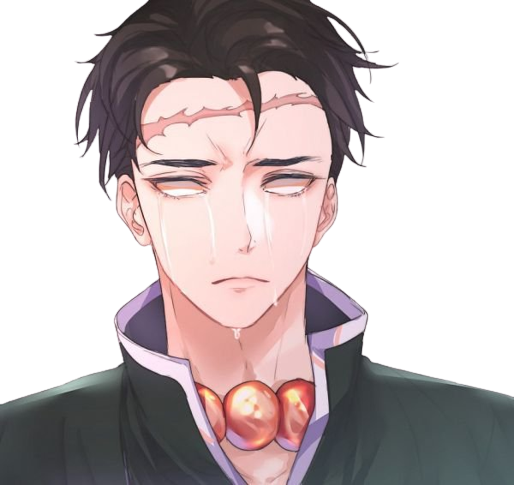

Gyomei Himejima
História
Antes mesmo de se tornar um Pilar, Gyomei Himejima criava algumas crianças órfãs em um templo, sendo
nove ao todo. Ele considerava os pequenos como uma família e, por viverem em uma região afastada, o
homem idealizou algumas regras para que todos pudessem viver em harmonia. Uma delas foi que ninguém
poderia passear ou brincar depois do pôr do Sol, pois poderia existir alguma ameaça pela localidade.
Embora a presença de onis fossem desconhecidas por parte de alguns moradores, o intérprete sempre
queimava incenso de glicínia — uma planta responsável por afastar demônios — todas as noites. Certa vez,
uma criança desobedeceu às regras e não voltou depois do pôr do Sol. Enquanto ela estava retornando ao
templo, um oni apareceu para devorá-la. Para se safar da situação, o garoto prometeu que levaria o
monstro para se alimentar das crianças e do homem que havia em um templo. Dessa forma, ele pegou os
incensos e jogou fora, permitindo a passagem para o oni. A criatura imediatamente matou quatro crianças,
então Gyomei pediu para as outras ficarem atrás dele, mas quatro correram para fora do templo, o que
acabou custando as suas vidas — ele tentou gritar, mas a sua voz era atenuada. Restando apenas a garota
mais nova chamada Sayo, Himejima pediu para ficar atrás e então confrontou o demônio, conseguindo socar
o seu rosto várias vezes até que o Sol nasceu e desintegrou a criatura — pela primeira vez em sua vida,
o homem usou os seus punhos e descobriu que tinha uma força assustadora. Quando o dia amanheceu, alguns
cidadãos foram ver o que tinha acontecido, então encontraram a garota perturbada dizendo que “aquele
monstro” havia matado as crianças. Como o demônio foi exposto aos raios solares e desintegrou, restou
apenas o nosso intérprete, que estava ferido e sangrando. Sem pensar duas vezes, os homens prenderam
Himejima e, se não fosse por Kagaya Ubuyashiki, o homem teria sido executado.

habilidades
Sendo considerado o Pilar mais forte atualmente, Himejima, ao contrário de Tokitou, passou por um
treinamento para melhorar as suas capacidades físicas. Em sua adolescência, ele conseguiu derrotar
um oni apenas usando os seus punhos. Como a criatura se regenerava, ele talvez tenha ficado mais de
seis horas esmurrando o seu inimigo, tudo para prendê-lo e o Sol aparecer. Após se tornar um Pilar,
o homem dedicou a sua vida em caçar demônios e, para isso, treinou até o seu corpo se aperfeiçoar.
Isso deixou Kokushibou surpreso, pois sabia que o seu porte físico foi trazido ao limite devido aos
treinamentos. Mesmo com a sua deficiência, o Pilar da Pedra mostrou que poderia superar seus limites
várias vezes, portanto treinou seus sentidos para ficarem aguçados. Embora seja cego, Himejima
consegue usar a sua audição para saber onde o inimigo está e até mesmo prever os seus movimentos.
Além disso, o personagem consegue perceber os sons dos batimentos cardíacos de seu adversário,
tornando a sua deficiência quase que inexistente. Tratando-se de suas Espadas Nichirin, o nosso
intérprete controla uma grande bola de aço que está amarrada por uma corrente grossa e um machado
que também é preso por uma corrente. A esfera se assemelha bastante a uma antiga arma conhecida como
Estrela da Manhã. Sendo um equipamento bastante pesado, o intérprete consegue controlá-los e
arremessá-los como se fossem uma extensão do seu corpo, tanto que é capaz de controlar a sua direção
caso o inimigo tente se esquivar de seu ataque. O interessante a ressaltar sobre esses equipamentos
é que ambos possuem uma pureza invejável, dando a impressão para a Lua Superior 1 que eles foram
banhados pela luz do dia por vários anos.
Respiração da Pedra
A respiração da pedra é uma técnica utilizada pelo Hashira Gyomei Himejima em Demon Slayer. A Respiração
de Pedra imita a terra e a pedra, especificamente a robustez e a fortificação do sólido, e o reproduz
com os movimentos, técnicas e habilidades do usuário.
A maioria, senão todas, as técnicas e formas conhecidas utilizam o solo sob o usuário e os vastos
arredores para gerar ataques poderosos que se especializam tanto no ataque quanto na defesa.

Primeira Forma: Serpentinita Bipolar (Ichi no kata: Jamongan – Sōkyoku)
O usuário joga o mangual e o machado em direção ao alvo pretendido e manipula a corrente
girando-a, fazendo com que o machado e o mangual também girem para perfurar e triturar
diretamente em seu alvo.
Segunda Forma: Esmagamento Superior (Ni no kata: Tenmen Kudaki)
O usuário joga seu machado e o mangual cravado para um movimento de pinça antes de esmagar a
corrente para fazer com que o mangual recupere e esmague seu alvo de longe.
Terceira Forma: Pele de Pedra (San no kata: Ganku no Hadae)
O usuário desfere uma série de golpes com seu machado desviando de ataques próximos.
Quarta Forma: Rocha Vulcânica – Conquista Rápida (Shi no kata: Ryumongan – Sokusei)
O usuário manipula as armas de mangual e machado em ambas as extremidades da corrente,
balançando a corrente em ambos os lados para atingir seus oponentes usando um ataque de duas
pontas de longo alcance
Quinta Forma: Roda de Pedra da Justiça (Go no kata: Garin Gyōbu)

O usuário utiliza uma barragem poderosa com seu mangual e machado, causando uma grande
quantidade de dano. O machado é destinado a acertar primeiro com a trajetória do mangual
seguindo do lado oposto e acertando o oponente.